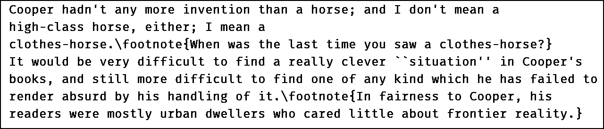
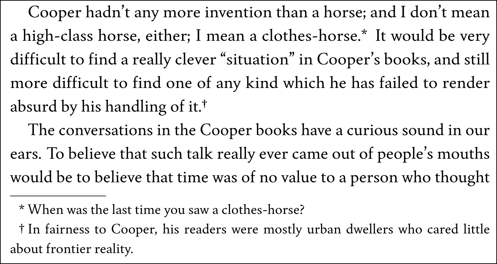
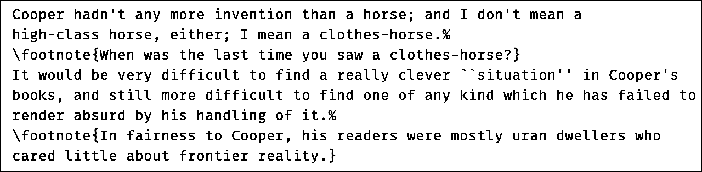

INDEX
INDEXFootnotes
In General
LaTeX was developed for academic works that make extensive use of footnotes. Novelette will have none of it. Instead, footnotes are limited to a style used in popular fiction, where the author wishes to mae the occasional remark.
For example, in one crime novel from the 1940s, the author remarks (in footnote) that although the legal principle mentioned at this point in the story seems unlikely, it is true. A more recent novel has the author remark that an incident similar to the one mentioned in the story, actually did occur in the past. In an older novel, where the author is pretending to be the editor of the story manuscript, the footnotes are in the form of short editorial remarks.
None of these are citations, in the acedemic sense. They are simply casual remarks, sometimes with a vague mention of where more information is available. This is the only kind of footnote supported by Novelette. It should be the only kind you will need, if any at all.
 top
topWriting a Footnote
\footnote{text}
The proper place for the \footnote command is at the end
of a sentence. In most cases, it follows whatever punctuation closes the
sentence, without intervening space. Some national styles may use a different
rule; Novelette does not know or care.
The text may have more than one paragraph, separated by \par
within the footnote command. Each paragraph indents.
There is no option for changing the footnote symbol.
Example text with footnotes:

How it looks in the PDF:

Improved Footnote
In the above example, the source has its footnotes mingled with main text, making it hard to read and edit.
A better method is to use % (The TeX comment symbol).
Place it immediately after the close of a sentence, without space there.
Then write the footnote on the following line, without preceding space.
That has the same result when typeset, but is easier to read in the source:

Where Footnotes Are Forbidden
You may not use footnotes in any fullpage,
copyrightpage, dedicationpage, or
contentspage environment.
You may not write a footnote within another footnote, within page headers,
or within any styled text: \name \subname \smalltext \scene
\formatX.
Footnote Markers
There is only one footnote style. No options.
- Footnote markers are symbolic, not numeral. The main Swainson font has markers designed for this purpose.
- If a footnote is written within an
upperpageenvironnment, no marker is printed, neither there nor at the bottom. This is standard style. It is used when the footnote applies to a chapter in general. - Each time
upperpageis encountered. it resets the footnote marker to asterisk*for the following main text. Normally, this is at each chapter. - The footnote marker order is
* † ‡ §(asterisk, dagger, doubledagger, section). If there are more than four footnotes within a chapter, those are followed by paired symbols** †† ‡‡ §§. If more than eight, the cycle returns to single asterisk. - At the bottom, the first line of each footnote is indented, but its marker hangs in the indent.
But... I Need Another Footnote Style!
Too bad. So sad. Not going to happen.